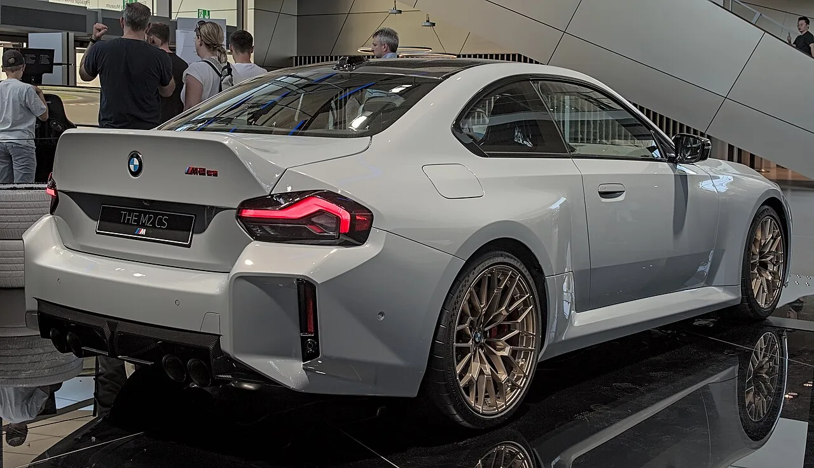

▲ BMW M2 CS. M2는 2029년 7월 단종될 예정이다
BMW M2의 단종 시점이 2029년 7월로 알려졌습니다. 그리고 그전에 마지막 고성능 버전이 나올 것이라는 이야기가 업계에서 흘러나오고 있습니다.
다만 먼저 분명히 해둘 것이 있습니다. 이 마지막 버전에 대해 확정된 정보는 사실상 없습니다. 모델명도, 출력도, 출시 시점도 공식 발표된 바 없습니다. 신뢰할 만한 소식통이 "새로운 성능 버전이 나올 것"이라고 언급한 단계입니다.
그래서 이 기사에서는 확인된 사실과 추정을 나눠서 정리하겠습니다.
1. 확인된 사실 — 현행 M2가 어떤 차인가
추정을 다루기 전에 지금 살 수 있는 차부터 정리하겠습니다.
현행 M2는 S58이라는 코드명의 3.0리터 트윈터보 직렬 6기통을 씁니다. M3·M4와 같은 계열의 엔진으로, M2에서는 473마력을 냅니다. 토크는 변속기에 따라 다른데, 수동이 406lb-ft, 자동이 443lb-ft입니다.
변속기는 6단 수동과 8단 자동 중 고를 수 있습니다. 구동방식도 후륜과 xDrive 사륜 중 선택 가능합니다. 미국 기준 기본가는 6만9,000달러입니다.
여기서 눈여겨볼 조합이 직렬 6기통 + 6단 수동 + 후륜구동입니다. 2026년 기준으로 이 세 가지를 동시에 만족하는 신차는 손에 꼽습니다.
| 항목 | 제원 |
|---|---|
| 엔진 | S58 트윈터보 3.0L 직렬 6기통 |
| 최고출력 | 473마력 |
| 최대토크 | 406lb-ft(수동) / 443lb-ft(자동) |
| 변속기 | 6단 수동 또는 8단 자동 |
| 구동방식 | 후륜 또는 xDrive |
| 기본가(미국) | 6만9,000달러 |

▲ 현행 M2 CS는 후륜구동만 제공된다
2. 추정 단계 — 어떤 형태가 거론되나
마지막 고성능 버전으로 언급되는 방향은 세 가지입니다. 모두 확정이 아닌 추정입니다.
①M2 CS 수동형. 현행 CS에는 수동변속기 선택지가 없습니다. M3 CS에 수동을 넣은 '한트샬터(Handschalter)' 사례가 있어, M2에도 같은 방식이 적용될 수 있다는 관측입니다.
②M2 CS xDrive. 현행 CS는 후륜구동만 나옵니다. 여기에 사륜구동을 추가하는 방향입니다.
③M 퍼포먼스 패키지. 새 모델을 만드는 대신 기존 부품을 묶어 특별 사양으로 내놓는 방식입니다. 개발 부담이 가장 적습니다.
세 가지 모두 완전히 새로운 차를 만드는 것이 아니라 기존 구성을 재조합하는 방향이라는 공통점이 있습니다. 단종을 3년 앞둔 모델에 대규모 개발비를 쓰기는 어렵기 때문입니다.
3. 진짜 의미는 수동변속기에 있다
이 소식에서 실제로 중요한 대목은 마지막 버전이 아니라 2029년 7월이라는 시한입니다.
M2는 현재 BMW M 라인업에서 6단 수동을 고를 수 있는 몇 안 되는 모델입니다. 그리고 업계에서는 이 차를 M 브랜드의 마지막 순수 내연기관 모델이자 마지막 수동변속기 M으로 봅니다. 2029년 7월이라는 날짜가 단순한 모델 단종을 넘어서는 의미를 갖는 이유입니다.
같은 흐름이 여러 브랜드에서 동시에 나타나고 있습니다. 캐딜락은 수동 V6 후륜구동 세단 CT4-V 블랙윙의 마지막 연식을 보내는 중입니다.
흥미로운 것은 반대 방향의 움직임도 함께 나타난다는 점입니다. 맥라렌은 34년 만에 수동변속기를 되살린 콘셉트를 공개했고, 고든 머레이는 4.2리터 자연흡기 V12에 6단 수동을 조합한 S1을 내놨습니다.
차이는 가격대입니다. 사라지는 쪽은 M2나 CT4-V 블랙윙처럼 상대적으로 접근 가능한 가격의 수동 고성능차이고, 돌아오는 쪽은 수억 원대 한정 모델입니다. 규제와 원가 압박은 대량 판매 모델에 먼저 닿기 때문입니다.
BMW가 같은 시기에 모터 4개를 얹은 전기 M 콘셉트를 공개했다는 점도 함께 보면 방향이 분명합니다.
4. 정리 — 지금 확실한 건 시한뿐
정리하면 확인된 사실은 M2가 2029년 7월 단종된다는 것입니다. 마지막 고성능 버전에 대해서는 모델명도 제원도 출시 시점도 공식 확정된 바가 없습니다.
업계 관측을 그대로 옮기면 M2 CS의 수동형이나 xDrive 추가, 혹은 M 퍼포먼스 패키지 형태가 거론되는 단계입니다. 공식 발표 전이므로 실제로 나올지, 나온다면 어떤 형태일지는 확인되지 않았습니다.
지금 시점에서 실질적으로 의미 있는 정보는 이것입니다. 473마력 직렬 6기통에 6단 수동을 조합한 후륜구동 M을 원한다면, 살 수 있는 기간이 정해져 있다는 것입니다.